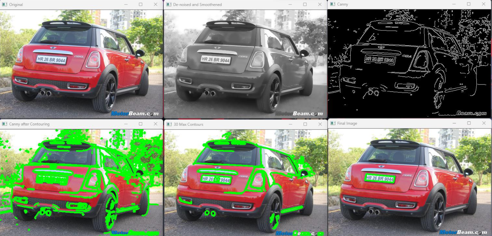

License Plate Recognition
Python, OpenCV, PyTesseractAbout The Project
This license plate recognition project aims to improve and automate the way we manage and track vehicles by harnessing the power of Digital Image Processing. With the increasing number of vehicles on the roads, traditional manual methods of license plate identification and registration have become time-consuming and disrupt normal traffic flow.
This program is just a prototype of how image-to-text conversion can be done. The program relies on Canny Edge Detection Operator, to locate the license plate in the image, and then uses Pytesseract tool to convert the image to a text output, which can be stored in a database.

Applications
- Traffic Surveillance: LPR systems play a crucial role in traffic monitoring and control. They help in identifying vehicles violating traffic rules, such as speeding or running red lights, enabling law enforcement to issue automated tickets. LPR systems also assist in managing traffic congestion and optimizing traffic flow through intelligent traffic management systems.
- Law Enforcement: LPR systems are extensively used by law enforcement agencies for vehicle identification, tracking, and investigation purposes. It helps in identifying stolen vehicles, locating wanted suspects, and detecting vehicles associated with criminal activities.
- Parking Management: LPR systems can automate parking management processes by accurately identifying vehicles entering and exiting parking lots. It enables efficient monitoring of parking duration, enforcement of parking rules and regulations, and facilitates cashless payment systems.
- Toll Collection: LPR systems are employed in toll booths to automate the toll collection process. By capturing license plate information, toll operators can automatically calculate and deduct toll fees, enhancing traffic flow and reducing the need for physical toll collection booths.
- Border Control and Customs: Border Control and Customs: LPR systems are utilized at border crossings and customs checkpoints to identify and track vehicles entering or leaving the country. They help in monitoring and controlling the movement of vehicles, detecting smuggling attempts, and enhancing border security.
- Parking Access Control: LPR systems can be integrated with access control systems to grant or deny entry to authorized vehicles based on their license plate information. This application is commonly used in gated communities, corporate parking lots, and secure facilities.
- Fleet Management: LPR systems can be utilized for fleet management, allowing businesses to track and monitor their vehicles in real-time. It helps in optimizing route planning, monitoring driver behavior, and ensuring compliance with regulations.